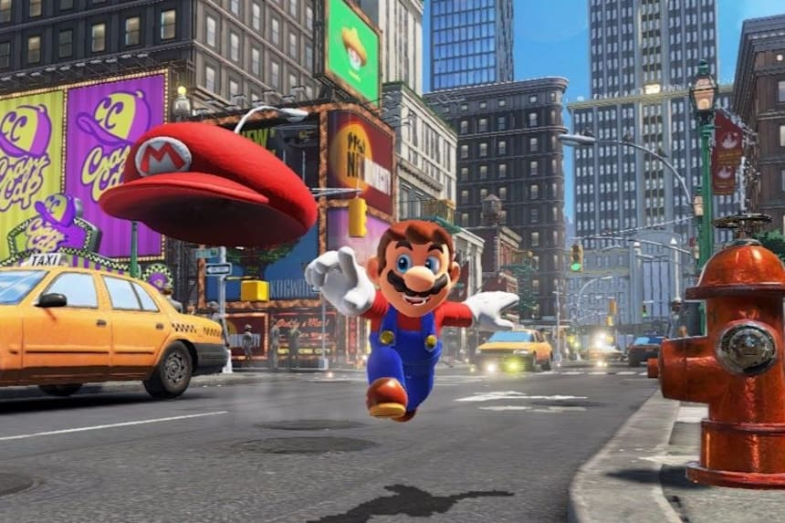

Mario se enfrenta contra Bowser dentro de su nave. El villano ya estaba vestido y preparado para casarse con la Princesa Peach (a quien ya tenía secuestrada). Después de una fuerte pelea, Bowser le lanza su sombrero a Mario para tirarlo de la nave (el primer golpe sólo le tira el gorro a Mario, pero luego el sombrero regresa con efecto boomerang, y logra tirarlo de la nave). Después Bowser pisotea el gorro que se le había caído a Mario y se va del Reino Champiñón con la princesa, permitiendo que las hélices de su nave trituren el gorro. La escena termina con un pequeño alienígena con forma de sombrero atrapando un pedazo del gorro que lleva la letra "M" de Mario, y mirando la nave de Bowser alejándose. Tras toda la aventura, Mario enfrenta a Bowser en plena boda. Cuando acaba la pelea, Bowser y Mario intentan seducir a Peach. La princesa los rechaza a los dos y activa la nave Oddysey. En el último momento Mario salta sobre Bowser, que se queda en la Luna. S uper Mario Odyssey pone al jugador en el rol de Mario y de cappy, un alienígena con forma de sombrero con quien que se alía para rescatar a la Princesa Peach y a Tiara, la hermana de Cappy, de Bowser. Este planea casarse forzadamente con la princesa peach, y por tanto se ha aliado con nuevos enemigos llamados Broodal, unos conejos antropomórficos que reemplazan a los Koopalings vistos en las anteriores entregas. El juego muestra a Mario viajando a través de varios mundos conocidos como «reinos», en una nave con forma de sombrero llamada odyssey.